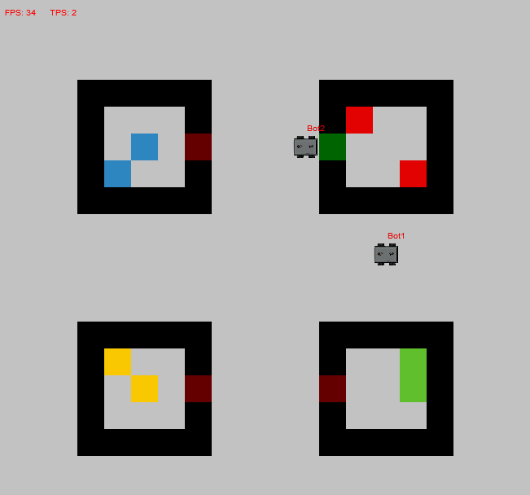

Adding objects¶
Before your agent is able to perform sensible actions, your simulation likely needs objects that the agent can interact with. In this tutorial, we will add (simple) objects to the grid world and let an agent interact with them. How to set up the world environment and add an agent has been treated in Creating your MATRXS world, so if anything regarding these methods is unclear, check out the corresponding tutorial.
Simple objects¶
Simple objects in MATRXS range from square blocks to smoke tiles. In this tutorial, we will deal with simple blocks, but adding the other objects is done in similar ways.
In your world factory, add the following line and adjust the parameters (x,y, color) to your liking.
factory.add_object((x, y), SquareBlock((x, y)).toJSON(), visualize_colour=color)
What is not given in the line above, but can also be adjusted to your liking is whether or not the block is traversable by using the parameter ‘is_traversable’, and how opaque block appears with ‘visualize_opacity’. Even the shape of the block could be changed into, for example, a triangle (‘visualize_shape’).
Rooms¶
Many real-life situations that can be simulated involve some sort of buildings. The option to add ‘buildings’ to MATRXS has, therefore, been added. These are available as rooms. At the moment, rooms can only be square or rectangular. To add a room to your MATRXS world, add the following to your factory.
factory.add_room([x, y], w, h, name="tutorial_room", door_locations=[(x+i, y+j)])
Rooms need a location (x,y), which indicates the top left corner of the room. The width (w) and height (h) of the room also needs to be given. For the agent to be able to enter the room, a door needs to be put in one of the room’s walls. Depending on where you want the door to be, the door location can be adjusted. Make sure that the location you enter is where one of the room’s walls is, otherwise an exception is thrown.
The doors in the rooms can be opened by agents. The OpenDoor action in Actions can be implemented in an autonomous agent’s brain, or be activated after input by a human agent.
{kind=link}
The image above is a situation simulating BlocksWorld For Teams (BW4T). It contains four rooms, each containing two blocks. One of the agents in the scene has opened a door, indicated by the door being green instead of red.